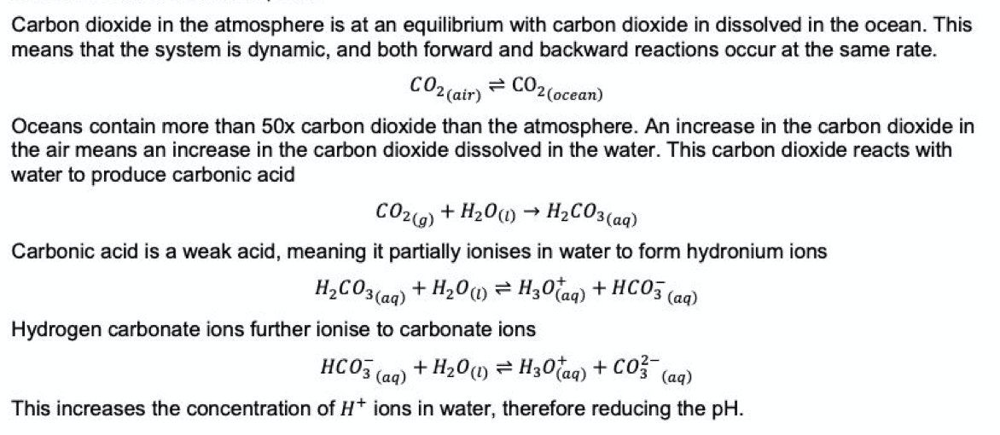
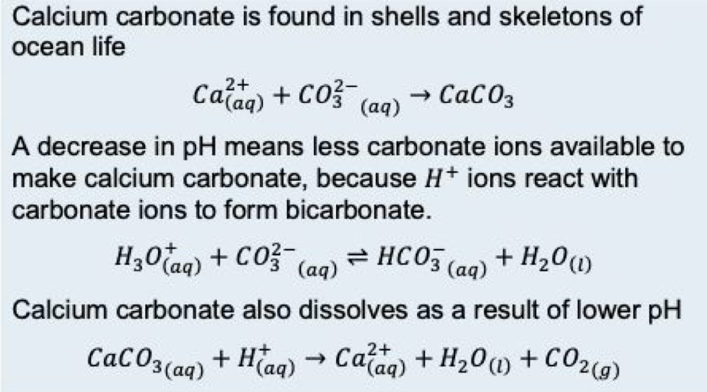

electromagnetic solar radiation in the form of visible light and UV radiation travels toward the earth
atoms and molecules absorb energy in the atmosphere and surface of earth
short wave radiation is re-radiated off earth's surface / atmosphere as long-wave radiation from the heated molecules in the earth's atmosphere and surface
some infrared radiation leaves the earth's atmosphere and enters the interplanetary space
greenhouse gases in the atmosphere absorb the rest of the radiation and re-radiate it in a random direction due to their bonding structure
this traps heat closer to the earth's surface, which establishes a thermal balance and therefore a stable temperature
what are the global measurements regarding CO2 levels?
scientific data shows that CO2 levels in the atmosphere have risen considerably in the past 1000 years
CO2 concentration is currently at its highest in human history with values exceeding 400ppm → in turn increasing the avg. global temp
what is the average increase in global temperature in the past century?
avg. temp risen by 0.8 degrees celcius globally in the past 100 yers
higher temperatures = more evaporation = more water vapour present = therefore more energy absorbed in the troposphere and reradiated back towards earth
what are the causes of ocean acidification?
increased emissions of CO2 from anthropogenic sources
describe + write calculations about how CO2 lowers the pH of the oceans
what are weak acids?
partially ionise in water, only some of the acid molecules ionise to form H+ ions
what are strong acids?
fully ionise in water, 100% of acid molecules ionise to form H+
what do lots of hydroxide ions (OH-) indicate?
basic
what do lots of hydronium ions (H+) indicate?
acidic
again
what is solar radiation?
a portion of electromagnetic radiation given off by the sun
consists of infrared radiation, visible light and ultraviolet radiation (UV)
largely made of visible wavelengths, longer infrared wavelengths, smaller component of shorter UV wavelengths
how much solar radiation is reflected by the earth's surface & atmosphere?
30% reflected due to albedo (reflectivity) of the earth's surface & atmosphere
land and sea ice, snow coverage & clouds are highly reflective
how much solar radiation is absorbed by the earth's atmosphere?
approximately 22% absorbed by the atmosphere
a component of UV radiation is absorbed by gases present in the stratosphere, specifically by the ozone molecule
ozone molecule : O3
how much solar radiation is absorbed by the earth's surface?
48% is absorbed → warms the surface
how much solar radiation is reradiated from the earth?
17% of the 48% is reradiated at lower energies and longer wavelengths
longer wavelengths have lower energy than visible light
comply with the 'thermal infrared region' of the electromagnetic spectrum
how much of the thermal radiation passes directly through the atmosphere?
12% passes directly through, into space
how much of the thermal radiation is absorbed by greenhouse gasses in the atmosphere?
5% is absorbed by molecules on the atmosphere known as greenhouse gasses
effect - warms the earth's surface & the troposphere
what is the atmosphere?
an atmosphere is a mixture of gases that surround the stars, planets and moons
the earth's atmosphere - 78% nitrogen, 21% oxygen, <1% other gases
atmosphere extends from the surface of earth to the barrier of interplanetary space
what are the layers within the atmosphere?
surface of the earth
then the lowest layer - troposphere (contains 75% of earth's gaseous molecules)
stratosphere
mesosphere
thermosphere
outermost layer - exosphere, which merges with interplanetary space
what is the sun?
the sun is a star that emits all wavelengths of electromagnetic radiation
what is infrared radiation?
IR is electromagnetic radiation with wavelengths longer than those of visible light
invisible to human eye, though can be felt as heat
longer wavelength radiation (IR) is of lower energy & usually less harmful
what are greenhouse gases
molecules in the troposphere of earth that can absorb and emit infrared radiation
this absorption & emission is vital in the maintenance of temperature range that supports life on earth
bushfires (combustion of natural vegetation) = Fuel + O2 →H2O + CO2
volcanic activity (combustion) = Fuel + O2 →H2O+ CO2
natural sources of methane
anaerobic decomposition of organic matter
permafrost - stored within sea ice, therefore it is released when sea ice melts
natural sources of nitrous oxide
denitrification (reduction of nitrate ions) in natural vegetation in soil and oceans = NO2- → NO → N2O → N2
natural sources of ozone
occurs naturally in the stratosphere through interaction between solar UV light & atmospheric O2 = O3
it is created and destroyed through the absorption of ultraviolet radiation in photochemical (light-absorbing) reactions
anthropogenic sources of carbon dioxide
combustion of fuels in the engines of motor vehicles
combustion of fuels during electricity generation
burning of fossil fuels
deforestation and land-clearing
less vegetation available to remove CO2 from atmosphere
reduced amount of natural sequestration occurring via photosynthesis
anthropogenic sources of methane
mining
landfill → released from natural anaerobic decay of matter
agriculture - intensive livestock farming → released by the animals
during production and use of fuel
released in rice farming due to anaerobic conditions generated in rice fields
anthropogenic sources of nitrous oxide
N2O
from the use of natural and synthetic fertilisers
cultivation of soil in agriculture
catalytic convertors produce a little amount of nitrous oxide
anthropogenic sources of sulfur hexafluoride
produced synthetically for use in electrical industry as an electrical insulator
produced for the industrial casting of magnesium
anthropogenic sources of hydrofluorocarbons & chlorofluorocarbons
synthetically produced for aerosols and foams, refrigerants
insulation in electrical cabling
released during production, use and disposal of these items
what is the enhanced greenhouse effect
a larger amount of outgoing infrared radiation is absorbed and reradiated to the surface, creating a thermal imbalance
increases average surface & atmospheric temperatures → global warming
what is global warming?
global warming refers to the phenomenon when the average surface temperature and atmospheric temperature increases as a consequence of the thermal imbalance caused by processes such as the enhanced greenhouse effect
enhanced greenhouse effect → result of human emissions of greenhouse gasses
results in large-scale shifts in weather patterns
what are the 4 causes of global warming?
variation in output of solar radiation
variation in the angular position of the earth relative to the sun
changes in volcanic activity
changes in the concentration of greenhouse gases in the atmosphere
what is melting of land & sea ice?
rising global temperatures → ocean warming → polar ice caps & land melt → causes rise in sea levels
😢 sea & land ecosystems support hundreds of species of animals → leads to habitat loss → shortage in food supplies → disrupts food chain → risk of extinction
😢 sea & land reflect incoming solar radiation. their melting causes more solar radiation to be absorbed by the surface → further increase in global temp
what is rising sea levels - ocean warming?
majority of heat produced by the enhanced greenhouse effect is absorbed by oceans due to the high specific heat capacity of water which allows the absorption of large quantities of energy
more heat absorbed by ocean → seawater undergoes thermal expansion when heated → volume of seawater in the oceans increases → sea levels rise
sea levels further rise as land ice melts & this water also disperses into the oceans
😢 - coastal areas are densely populated → rising sea levels increase their vulnerability → flooding displaces thousands → costs billions in repairs, relief work and recovery
😢 - can also flood nearby forests → habitat loss → extinction of species
what is permafrost?
frozen soil / rock contains methane and melts due to rising temperatures → methane is released → this facilitates the enhanced greenhouse effect → more severe global warming
what is coral bleaching?
coral have algae living on them, which act as their food source
when the ocean heats up or gets polluted, the coral become stressed and release the algae → coral turn white and die because they have no food
😢 - fish lose home (the coral) → fish die → disrupts food web
😢 - less fish → less jobs → harms the fishing industry → impacts the economy
😢 - less fish → facilitates global food shortages
what are extreme weather events?
increase in global temps → decrease in frequency of cold weather & increase in frequency of hot weather → changes in rainfall patterns → leads to extreme weather events such as droughts, heat waves, floods, storms
😢 - extinction of species who have not adapted to the change + harms the wellbeing of humans
what are declining arctic sea ice, shrinking ice sheets & retreating glaciers?
GW causes rise in sea levels and alters the salinity of the water → these changes affect the circulation of global ocean currents which impact weather and hence the climate
less ice → earth's reflectivity decreases → increased global temperatures → alters global climate
what is ocean acidification?
ocean acidification is the ongoing decrease in the pH of earth's oceans, caused by the oceans absorbing higher levels of CO2 from the atmosphere
larger amount of hydronium ions (H3O+) → decrease in pH → more acidic
hydronium ion concentration of the ocean has increased by 20-30% since the beginning of the industrial revolution
what are the 3 major consequences of ocean acidification?
calcifying organisms that play a vital role in the oceanic ecosystem
calcareous plankton - photosynthetic micro-organisms that form the basis of the oceanic food web
a reduction in their population size will destabilise the food web, reducing the populations of higher organisms such as fish and other forms of seafood
chemical reactions related to calcifying organisms 
negative effects of ocean acidification on calcifying organisms
the skeletons & shells of many marine organisms are made of CaCO3 & are vulnerable to dissolution at low pH
limits an organisms ability to form shells
organisms that rely on carbonate base structures for shelter are impacted as these structures dissolve
jobs and economies both depend on the life of shelled creatures
what are corals?
corals are marine animals that build skeletons from calcium carbonate
serve as habitat for 25% of all marine life on this planet
this marine life will be displaced and unprotected as more coral is dissolved due to the rising concentrations of acidity (H+ ions) in the oceans
negative effects of ocean acidification on coral
ocean acidification causes coral to become stressed & release the algae (their food source) → subsequently, they turn white and die because they have no food
negative effects of ocean acidification on pH sensitive organisms
some marine life are pH sensitive → they die if pH is too high or too low
doesn't only kill the pH sensitive organisms, but other organisms which feed on them may also die due to lack of food → disrupted food chain
{kind=link}
{kind=link}
{kind=link}
{kind=link}
{kind=link}
{kind=link}
{kind=link}
{kind=link}

{kind=link}
{kind=link}
{kind=link}
{kind=link}
{kind=link}
{kind=link}